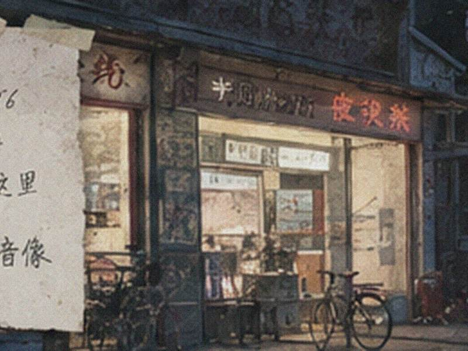

以前租连续剧一拿就是六七张，回家才发现少一盘的事也不少。
南街二楼
你们门口以前是不是有只黄狗？不是店里养的我知道，但我小时候一直以为它叫“白鸽”。
北门口
你们柜台玻璃下面以前是不是压过一张旧公交卡？我小时候一直想拿出来看。
阿杰
老板，我2004年的押金本找到了，12块。开玩笑的，不用退，留着当古董吧。
老周
以前打印简历最怕前面有人洗一大堆照片，一等就是半小时。
周末借碟
最怀念的是门口那台小电视，画面总偏绿，还一天到晚放同一张碟。
盐汽水
我把2003那张蓝棚子的照片传了。修鞋摊没拍进去，可惜。

桥北
谁还记得隔壁修鞋摊后来搬去哪了？我爸说就在你们门口摆过三年。
小陈
2006世界杯那会儿老板天天把电视声音开得特别大。
阿兰
我第一次自己来租碟就是这里，押金本封皮是绿色的。
阿文
以前每次放学路过都闻到隔壁炸串味，和店里塑料盒味混在一起，挺怪的。
匿名
谁还记得老板那把透明胶放哪？每次碟盒裂了都当场粘。